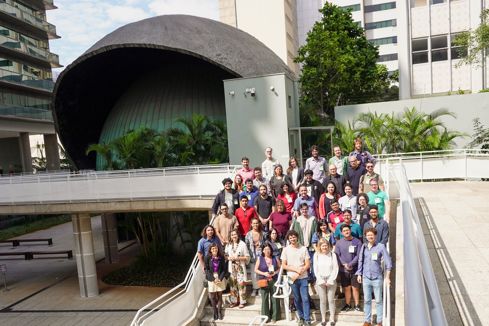
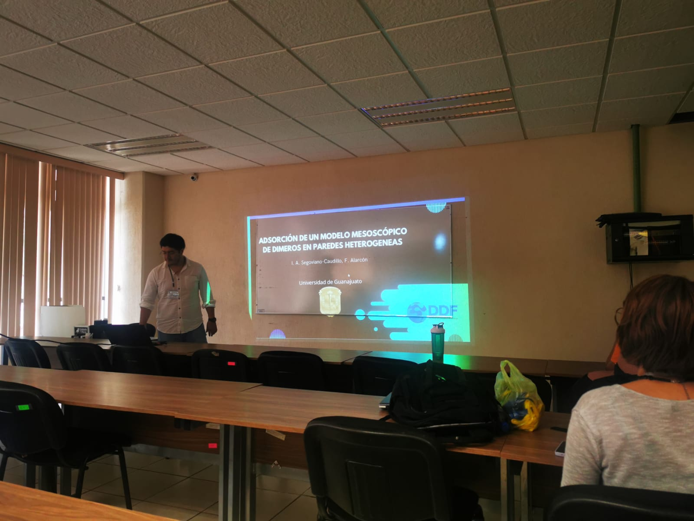
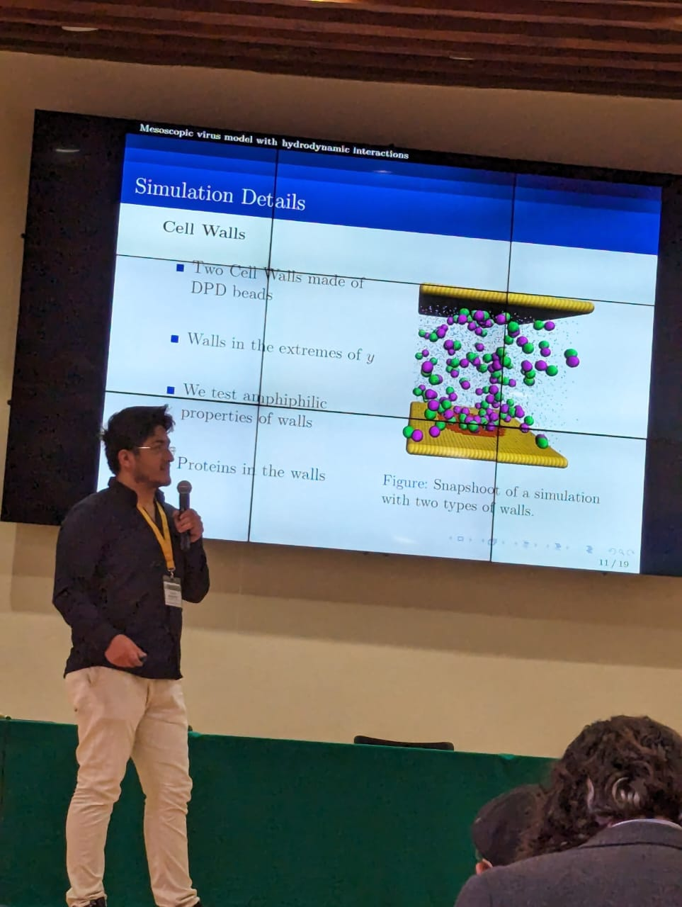
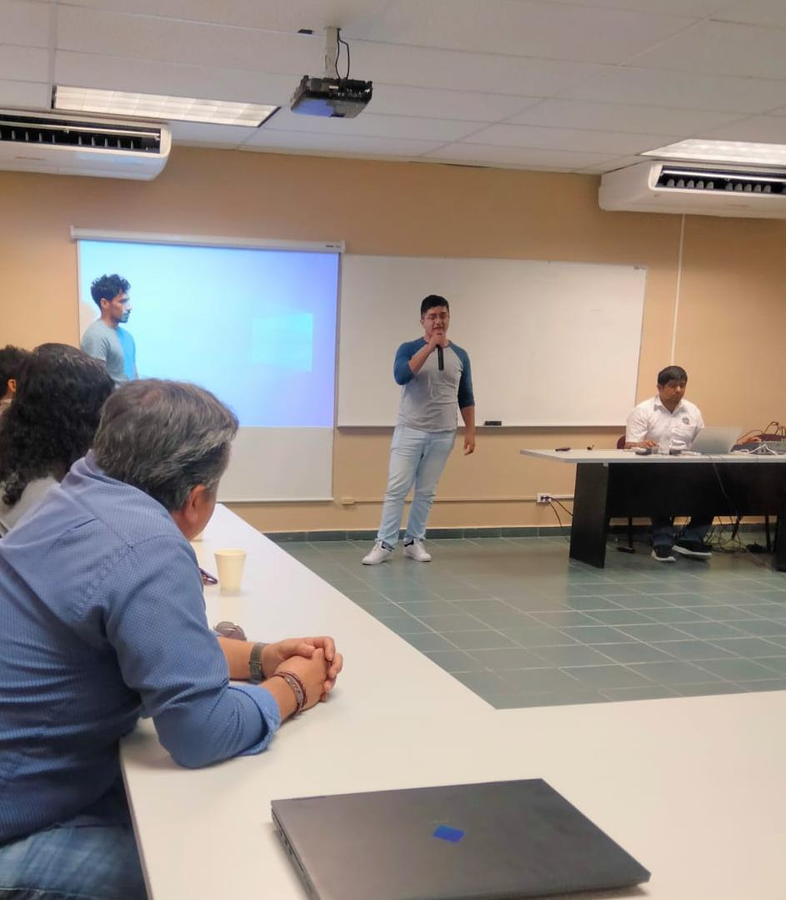
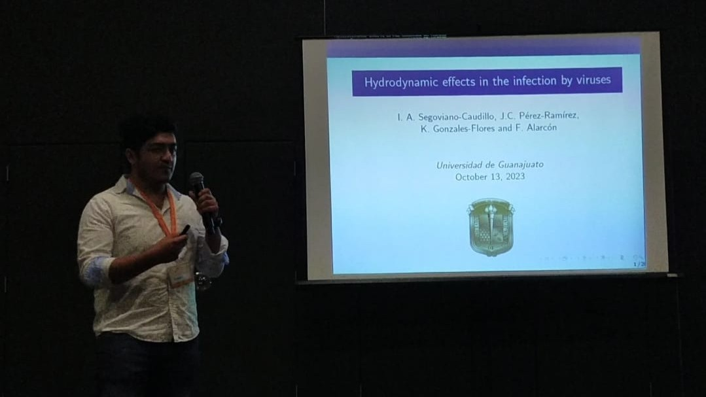

Conferences
II Brazilian Workshop on Soft Matter - International Centre for Theoretical Physics SAIFR (2025)
In 2025, I had the opportunity to present my research at the ICTP-SAIFR. This conference is a prestigious event that brings together researchers and practitioners from around the world to discuss the latest advancements in biological computational physics. During my presentation, I shared my findings on the adsorption dynamics of dimers in a fluid and their interactions with heterogeneous walls. The feedback and discussions that followed were invaluable for further refining my research and exploring new avenues for investigation.
National Conference of the Fluids Dynamics Division (2025)
In 2025, I had the privilege of presenting my research at the National Conference of the Fluids Dynamics Division. This conference is a significant event in the field of fluid dynamics, attracting experts and researchers from across the country. During my presentation, I shared my findings on the mesoscopic virus model with hydrodynamic interactions, specifically focusing on the introduction of flow and the implementation of non-slip boundary conditions using rough walls. The discussions and feedback I received during the conference were instrumental in further developing my research and exploring
LII Winter Meeting on Statistical Physics (2024)
In 2024, I had the privilege of presenting my research at the LII Winter Meeting on Statistical Physics, which took place in the beautiful city of Puebla, Mexico. This conference is a significant event in the field of statistical physics, attracting experts and researchers from around the world.
LVII National Congress of Physics (2024)

In 2024, I had the opportunity to present my research at the XXIII National Congress of Physics, held in Guadalajara, Mexico. This congress is a prestigious event that brings together physicists from across the country to share their latest research findings and advancements in various fields of physics.
Summer School on Quantum Computing (2023)
In 2023, I had the opportunity to attend the Summer School on Quantum Computing, which was held in the Universidad de Baja California. This event provided an intensive learning experience on the fundamentals and applications of quantum computing. During the school, I had the chance to engage with leading experts in the field, participate in hands-on workshops, and deepen my understanding of quantum algorithms and their potential impact on various industries.
LVI National Congress of Physics (2023)
In 2023, I had the privilege of presenting and attending my first National Congress of Physics, held in Morelia, Mexico. This congress is a significant event in the field of physics, attracting researchers and experts from across the country to share their latest research findings and advancements in various fields of physics.